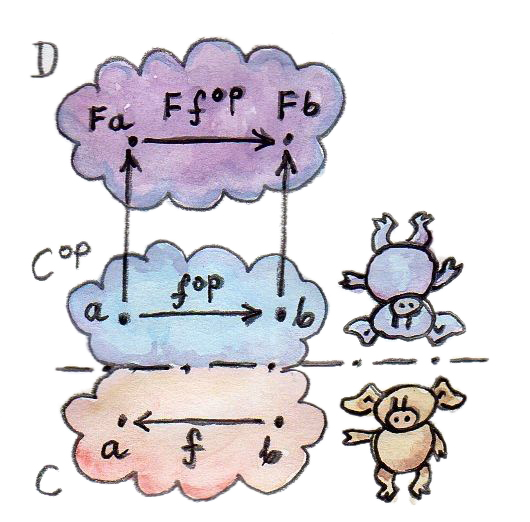

9 ความเป็นFunctor (Sketch)
ในตอนนี้คุณได้รู้ว่าfunctorคืออะไรและได้เห็นตัวอย่างต่างๆของมัน เรามาดูวิธีในการสร้างfunctorที่ใหญ่กว่าจากตัวเล็กๆ มันนั้นน่าสงใจโดยเฉพาะเช่นการที่จะเห็นconstructorของtype(ที่คือการโยงระหว่างวัตถุในcategory)สามารถถูกเพิ่มเติมไปเป็นfunctor(ที่รวมไปภึงการโยงระหว่างmorphism)
9.1 Bifunctors
เนื่องด้วยว่าfunctionคือmorphismใน\(\textbf{Cat}\)(categoryของcategory)ความเข้าใจหลายๆอย่างที่เกียวกับmorphism (และfunctionโดยเฉพาะ)ก็สามารถถูกใช้ได้กับfunctionเช่นเดียวกัน ตัวอย่างเช่นเหมือนกันกับการที่คุณมีfunctionที่มีสองargument คุณสามารถที่จะมีfunctorที่มีสองargumentหรือbifunctor ถ้าพูดถึงการกระทำบนวัตถุ bifunctorนั้นโยงทุกๆคู่ของวัตถุอันหนึ่งจากcategory\(\textbf{C}\)และวัตถุจากcategory\(\textbf{D}\)ไปยังวัตถุในcategory\(\textbf{E}\) สังเกตได้ว่าสิ่งนีก็แค่พูดว่ามันคือการโยงจากการคูณแบบCartesianของcategory \(\textbf{C}\times\textbf{D}\)ไปยัง\(\textbf{E}\)

สิ่งนี้ค่อนข้างตรงไปตรงมาแต่ความเป็นfunctorหมายความว่าbifunctorต้องทำการโยงmorphismเช่นเดียวกัน แต่ในตอนนี้มันต้องโยงคู่ของmorphismที่ตัวหนึ่งมาจาก\(\textbf{C}\)และตัวหนึ่งมาจาก\(\textbf{D}\)ไปยังmorphismใน\(\textbf{E}\)
อีกครั้งว่าคู่ของmorphismคือแค่morphismเดี่ยวในproduct category \(\textbf{C}\times\textbf{D}\)ไปยัง\(\textbf{E}\) เรานิยามmorphismในคูณแบบCartesianของcategoryต่างๆในฐานะคู่ของmorphismที่เริ่มจากคู่แรกของวัตถุไปยังอีกคู่หนึ่งของวัตถุ คู่morphismเหล่านี้สามารถถูกประกอบในวิธีที่ตรงไปตรงมา
\[ (f, g) \circ (f', g') = (f \circ f', g \circ g') \]
การประกอบแบบนี้นั้นมีคุณสมบัติการเปลี่ยนหมู่และมันมีidentity(คู่ของidentity morphismอย่าง \((\operatorname{id}, \operatorname{id})\))ดังนั้นคูณแบบCartesianของcategoryก็เป็นcategory
วิธีที่ง่ายกว่าในการคิดเกี่ยวกับbifunctorก็คงจะเป็นการพิจารณามันในแต่ละargumentแยกออกไป ดังนั้นแทนที่จะแปลกฏทางfunctor (การรักษาสมบัติการเปลี่ยนหมู่และidentity) จากfunctorไปยังbifunctor มันคงมาพอที่จะทดสอบมันโดยการแยกออกเป็นที่ละargument แต่โดยทั่วไปแล้ว ความเป็นfunctorแบบแยกไม่สามารถที่จะพิสูจน์ความเป็นfunctorแบบรวม categoryที่ความเป็นfunctorแบบรวมล้มเหลวจะถูกเรียกว่าpremonoidal
เรามานิยามbifunctorในHaskellในกรณีนี้ทั้งสามcategoryนั้นเหมือนกันนั้นก็คือcategoryของtypeในHaskell bifuntorคือconstructorของtypeที่นำสองargumentของtypeเข้ามา นี่คือนิยามของBifunctortypeclassที่เอามาโดยตรงจากlibaryControl.Bifunctor
class Bifunctor f where
bimap :: (a -> c) -> (b -> d) -> f a b -> f c d
bimap g h = first g . second h
first :: (a -> c) -> f a b -> f c b
first g = bimap g id
second :: (b -> d) -> f a b -> f a d
second = bimap idต้วแปรของtypefแทนbifunctionนั้น คุณสามารถที่จะเห็นได้ว่าในtype signatureทั้งหมดถูกนำไปใช้ต่อargumentของtypeทั้งสอง ในtype signatureแรกนิยามbimapที่คือการโยงสองfunctionในเวลาเดียวกัน ผลที่ตามาคือfunctionที่ถูกliftf a -> f c dที่ทำบนtypeที่ถูกสร้างโดยconstructorของtypeของbifunction ได้มีการเขียนของbimapในรูปแบบของfirstและsecond (เป็นดั่งที่กล่าวก่อนหน้านี้ว่ามันไม่ได้ใช้ได้ตลอกเพราะว่าการโยงทั้งสองอาจจะไม่สามารถสลับที่ได้นั่นก็คือfirst g . second hอาจจะไม่เหมือนกับsecond h . first g)
ในtype signatureทั้งสองที่เหลือfirstและsecondคือfmapsทั้งสองที่เป็นตัวแทนของความเป็นfunctorของfในargumentตัวแรกและตัวที่สองตามลำดับ


นิยามของtype classให้การเขียนที่ให้มาอยู่แล้วของทั้งสองในรูปแบบของbimap
ในตอนประกาศinstanceของBifunctorคุณมีทางเลือกของการเขียนbimapและยอบรับกับการเขียนที่ให้มาอยู่แล้วของสำหรับfirstและsecondหรือการเขียนทั้งfirstและsecondและยอมรับบการเขียนที่ให้มาอยู่แล้วของสำหรับbimap (แน่นอนว่าคุณอาจจะเขียนทั้งสามตัวหมดแต่มันก็ขึ้งอยู่กับคุณที่จะทำให้แน่ใจว่าพวกมันมี่ความเกี่ยวข้องในแบบที่ว่า)
9.2 BifunctorแบบProductและCoproduct
ตัวอย่างที่ดีที่สุดของbifunctorคือproductแบบcategorical (productของสองวัตถุที่ถูกนิยามโดยการสร้างแบบสากล) ถ้าproductนั้นมีอยู่สำหรับทุกๆคู่ของวัตถุ การโยงจากวัตถุเหล่านี้ไปยังproductนั้นก็มีความเป็นbifuncto มันเป็นจริงโดยทั่วไปและในโดยเฉพาะHaskell ในที่นี้instanceBifunctorสำหรับconstructorแบบpair ที่เป็นtypeแบบproductที่เรียบง่ายที่สุด
instance Bifunctor (,) where
bimap f g (x, y) = (f x, g y)มันไม่มีตัวเลือกอื่นๆbimapนั้นแค่นำfunctionแรกไปใช้กับส่วนแรกและfunctionที่สองไปใช้กับส่วนที่สอง โค้ดของสิ่งนี้เขียนตัวมันเองอยู่แล้วถ้าให้typesต่างๆกับมัน
bimap :: (a -> c) -> (b -> d) -> (a, b) -> (c, d)การกระทำของbifunctorในที่นี้คือการทำpairของtypeตัวอย่างเช่น
(,) a b = (a, b)โดยduality coproductถ้ามันสามารถถูกนิยามสำหรับทุกๆคู่ของวัตถุในcategoryก็คือbifucntorเช่นกัน ในHaskellนี้ถูกแสดงโดยconstructorของtypeEitherซึ่งก็เป็นinstanceของBifunctor
instance Bifunctor Either where
bimap f _ (Left x) = Left (f x)
bimap _ g (Right y) = Right (g y)โค้ดของสิ่งนี้ก็เขียนตัวมันเองเช่นกัน
ในตอนนี้เรายังจำตอนที่เราพูดเกี่ยวกับcategoryที่เป็นmonoidal? categoryที่เป็นmonoidalนิยามoperatorที่เป็นbinaryในการกระทำกับวัตถุคู่กับวัตถุที่เป็นunit ผมได้เอ่ยถึงว่า\(\textbf{Set}\)นั้นเป็นcategoryที่เป็นmonoidalเมื่อมีการคูณแบบCartesianคู่กับsetที่มีสมาชิกเดี่ยวเป็นในฐานะunit สิ่งที่ผมไม่ได้กล่าวถึงคือว่าหนึ่งในเงื่อนไขสำหรับที่ว่าoperatorที่เป็นbinaryเป็นbifunctor นี่คือเงื่อนไขที่สำคัญเราต้องการproductแบบmonoidalให้เข้ากันได้กับโครงสร้างของcategoryที่ที่ถูกนิยามโดยmorphism เรานั้นเข้าใกล้ถึงนิยามเต็มของcategoryที่เป็นmonoidalไปอีกขั้น (เรายังต้องเราเกี่ยวกับnaturality(ความเป็นธรรมชาติ)ก่อนที่จะไปถึงจุดนั้น)
9.3 typeข้อมูลแบบพีชคณิตที่มีความเป็นfunctor (Functorial Algebraic Data Types)
เราได้เห็นตัวอย่างหลายๆตัวของtypeข้อมูลที่ถูกparameterizedที่กลายมาเป็นfunctor เราสามารถที่จะนิยามfmapสำหรับมัน typeข้อมูลที่มีความชับช้อนนั้นถูกสร้างจากtypeข้อมูลที่ง่ายกว่า โดยเฉพาะtypeข้อมูลแบบพีชคณิต(algebraic data types (ADTs))ที่ถูกสร้างโดยการใช้sumและproduct เราได้เห็นมาแล้วว่าsumและproductนั้นมีความเป็นfunctor เราก็รู้ว่าfunctorสามารถประกอบกันได้ ดังนั้นถ้าเราสามารถที่จะแสดงได้ว่าส่วนประกอบของADTsนั้นมีความเป็นfunctor เราก็จะรู้ได้ว่าADTที่ถูกparameterizedนั้นก็มีความเป็นfunctorเช่นกัน
ดังนั้นอะไรคือส่วนประกอบของADTsที่ถูกparameterized? อย่างแรกได้มีส่วนที่ไม่ขึ้นกับparameterที่เป็นtypeของfunctorอย่าง NothingในMaybeหรือNilในList พวกมันมีความเท่ากันกับfunctorConst จำได้ว่าfunctorConstนั้นไม่สนใจparameterที่เป็นtype (จริงๆแล้วparameterที่เป็นtypeที่สองที่คือเป็นสิ่งที่เราสนใจ และตัวแรกก็ถูกเก็บไว้ให้คงที่)
ดังนั้นมันก็จะมีส่วนที่แค่ครอบ(encapsulate)parameterที่เป็นtypeในมันเองเหมือนกับJustในMaybe มันนั้นเท่ากันกับfunctorที่เป็นidentity ผมได้กล่าวถึงfunctorที่เป็นidentityไปก่อนหน้านี้ในฐานะmorphismที่เป็นidentityใน\(\textbf{Cat}\)แต่ไม่ได้ให้นิยามของมันในHaskell นี่คือนิยามของมัน
data Identity a = Identity ainstance Functor Identity where
fmap f (Identity x) = Identity (f x)คุณสามารถที่จะคิดถึงIdentityในฐานะcontainerที่เรียบง่ายที่สุดที่จะเก็บแค่ค่าๆ(ที่ไม่สามารถเปลี่ยนได้)ของtypea
ทุกๆอย่างที่่เหลือในdata structureแบบพีชคณิตนั้นสร้างมาจากพื้นฐานทั้งสองโดนการใช้productกับsum
ด้วยความรู้ใหม่นี้เรามามองในมุมมองใหม่ของconstructorของtypeMaybe
data Maybe a = Nothing | Just aมันคือsumของtypeสองแบบและเราได้รู้ว่าsumนั้นมีความเป็นfunctorในส่วนแรกNothingสามารถที่จะถูกแาดงในรูปแบบของConst ()ที่กระทำบนa(parameterแบบtypeแรกของConstที่ถูกกำหนดให้เป็นunit หลังจากนี้เราจะเห็นการใช้Constที่น่าสนใจ) ในส่วนที่สองก็คือแค่ชื่อที่ต่างไปของidentity functor เราอาจจะนิยามMaybeจนถึงความisomorphismว่า
type Maybe a = Either (Const () a) (Identity a)ดังนั้นMaybeคือการประกอบกันของbifunctorEitherคู่กับสองfunctorอย่างConst ()และIdentity (Constนั้นจริงๆแล้วเป็นbifunctorแต่ในที่นี้เราได้ใช้มันในบางส่วนตลอดเวลา)
เราได้เห็นแล้วว่าfunctorที่ประกอบกันคือfunctor เราสามารถที่จะโน้มน้าวเราเองง่ายๆว่าbifunctorก็เป็นเช่นเดียวกัน ทั้งหมดที่เราต้องมีคือการหาวิธีในการที่bifunctorที่ถูกกระกอบคู่กับfunctorสองตัวจะทำงานบนmorphismได้อย่างไร ถ้ามีmorphismอยู่สองตัวเราแค่liftตัวหนึ่งด้วยfunctorตัวหนึ่งและliftอีกตัวด้วยfunctorอีกตัวหนึ่ง เราจึงliftคู่ของmorphismที่ถูกliftที่เป็นผลมาจากสิ่งก่อนหน้านี้ด้วยbifunctor
ดราสามารถที่จะแสดงการประกอบกันในHaskell เรามานิยามtypeของdataที่ถูกparameterizedโดยbifunctorbf(มันคือตัวแปรแบบtypeที่ก็คือconstructorของtypeที่นำสองtypeมาในฐานะargument) functorทั้งสองอย่างfuและgu(constructorของtypeที่นำตัวแปรแบบtypeมาแต่ระอย่าง)และtypeทั่วๆไปaและb เราใช้fuไปกับaและguไปกับbแล้วก็ใช้bfกับผลลัพธ์ที่เป็นทั้งสองtype
newtype BiComp bf fu gu a b = BiComp (bf (fu a) (gu b))นั่้นคือการประกอบกันของวัตถุหรือtype สังเกตว่าวิธีในHaskell เราใช้constructorของtypeกับtypeต่างๆ เหมือนกับการที่เราใช้functionไปกับargumentต่างๆ เป็นไวยากรณ์ที่เหมือนกัน
ถ้าคุณสับสนเล็กน้อยลองใข้BiCompไปยังEither,Const (),Identity,aและbในลำดับนี้ คุณจะได้อีกรูปที่พื้นฐานแบบหนึ่งของMaybe bกลับมา(aก็ถูกเมินเฉย)
typeข้อมูลอันใหม่BiCompคือbifunctorบนaและbแต่แค่bfนั้นคือBifunctorเองและfuและguคือFunctor complierต้องรู้ว่าได้มีนิยามของbimapอยู่สำหรับbfและนิยามของfmapในfuและgu ในHaskellนี่สามารถถูกแสดงในฐานะเงื่อนไขเบื้องต้นในการประกาศของinstanceนั้นก็คือกลุ่มของความต้องการของclass (class constraints)ตามด้วยลูกศรคู่
instance (Bifunctor bf, Functor fu, Functor gu) =>
Bifunctor (BiComp bf fu gu) where
bimap f1 f2 (BiComp x) = BiComp (bimap (fmap f1) (fmap f2) x)ในการเขียนของbimapสำหรับBiCompที่ถูดให้มาในรูปแบบของbimapสำหรับbfและfmapsทั้งสองสำหรับfuและgu complierนั้นอนุมานโดยอัตโนมัติสำหรับtypesทั้งหมดและเลือกfunctionที่ถูกoverloadได้อย่างถูกต้องในทุกๆตอนที่BiCompถูกใช้
xในนิยามของbimapนั้นมีtypeเป็นแบบนี้
bf (fu a) (gu b)ที่ที่ข้อนข้างมีขนาดใหญ่ bimapรอบนอกทะลุผ่านชั้นของbfและfmapทั้งสองถูดขุดภายใต้fuและguตามลำดับ ถ้าtypeของf1และf2คือ
f1 :: a -> a'
f2 :: b -> b'แล้วผลลัพธ์สุดท้ายของtype bf (fu a') (gu b')คือ
bimap :: (fu a -> fu a') -> (gu b -> gu b')
-> bf (fu a) (gu b) -> bf (fu a') (gu b')ถ้าคุณชอบปัญหาจิ๊กซอว์ การโยกย้ายtypeแบบนี้สามารถให้ความบันเทิงกับคุณเป็นชั่วโมงเลย
ดันนั้นมันกลับเป็นว่าเราไม่ต้องที่จะพิสูจน์ว่าMaybeเป็นfunctor ความจริงนี้ตามมาจากวิธีการที่มันถูกสร้างในฐานะsumของพื้นฐานที่มีความเป็นfunctor
ผู้อ่านที่ช่างสังเกตอยากจะถามคำถามว่า ถ้าการได้รับมาของinstaceของFunctorสำหรับtypeข้อมูลแบบพีชคณิตนั้นมีความเป็นกลไกอย่างมาก แล้าเราสามารถทำให้การทำแบบนี้เป็นอัตโนมัติและกระทำโดยcomplterได้หรือเปล่า แน่นอนว่ามันสามารถทำได้และมันทำอยู่ คุณต้องเปิดใช้งานextensionของHaskellบางตัวโดยการนำบรรทัดนี้เข้ามาข้างบนของไฟล์ของโค้ด(source file)
{-# LANGUAGE DeriveFunctor #-}แล้วก็เพิ่มderiving Functorไปยังdata structureของคุณ
data Maybe a = Nothing | Just a deriving Functorแล้วfmapที่สอดคล้องกันก็จะถูกเขียนให้คุณ
ความเป็นระเบียบของdata strctureแบบพีชคณิตทำให้มันเป็นไปได้ที่จะสร้างinstanceที่ไม่ใช่แค่สำหรับFunctorแต่type classต่างๆอีกหลายตัวรวมไปถึงEqtype classที่ผมพูดถึงก่อนหน้านี้ มันได้มีทางเลือกในการสอนcomplierในการสร้างinstancesสำหรับtype classsของคุณแต่นั้นค่อนข้างขั้นสูงไปหน่อย แนวคิดถึงแม้จะเหมือนกันคือคุณให้พฤติกรรมสำหรับส่วนประกอบพื้นฐานและการsumและproductและให้complierคิดในส่วนที่เหลือ
9.4 FunctorในC++
ถ้าคุณเป็นคนที่เขียนC++แน่นอนว่าคุณนั้นอยู่ตัวคนเดียวเท่าที่การเขียนfuntorจะเป็น แต่คุณควรที่สามารถที่จะมองเห็นtypeบางตัวของdata structureแบบพีชคณิตในC++ถ้าdata structureแบบนั้นถูกสร้างไปเป็นtemplateทั่วไป (generic template)คุณควรที่จะสามารถเขียนfmapสำหรับมัน
เรามาดูที่data structureแบบtreeที่เราต้องการที่จะนิยามมันในHaskellในฐานะtypeแบบsumและrecursive
data Tree a = Leaf a | Node (Tree a) (Tree a)
deriving Functorเหมือนกัยการที่ผมเอ่ยถึงก่อนหน้านี้ วิธีหนึ่งในการเขียนtypeแบบsumในC++คือผ่านลำดับชั้นของclass มันอาจจะเป็นธรรมชาติในภาษาแบบobject-orientedในการเขียนfmapในฐานะfunctionแบบvirtualของclassพื้นฐานอย่างFunctorและก็overrideมันในsubclassทั้งหมด น่าเสียดายว่าสิ่งนี้เป็นไปไม่ได้เพราะfmapคือtemplate ที่parameterizedไม่ได้แค่โดยtypeของวัตถุที่มันกระทำต่อ (pointerของthis)แต่ก็รวมไปถึงtypeที่returnมาของfunctionที่ถูกนำมาใช้กับมัน functionแบบvirtualไม่สามารถที่จะทำให้เป็นtemplateในC++ เราจะเขียนfmapในฐานะfunction freeทั่วไป(generic free function)และเราจะแทนที่การจับคู่รูปแบบด้วยdynamic_cast
classฐานต้องนิยามfunctionแบบvirtualหนี่งตัวเป็นอย่างน้อยเพื่อที่จะสนับสนุนการcastingแบบdynamicsดังนั้นเราจะทำdestructorเป็นvirtual (ที่ก็เป็นแนวคิดที่ดีในทุกๆกรณี)
template<class T>
struct Tree {
virtual ~Tree() {}
};Leftก็เป็นแค่functorIdentityแบบแอบๆ
template<class T>
struct Leaf : public Tree<T> {
T _label;
Leaf(T l) : _label(l) {}
};Nodeเป็นtypeแบบproduct
template<class T>
struct Node : public Tree<T> {
Tree<T> * _left;
Tree<T> * _right;
Node(Tree<T> * l, Tree<T> * r) : _left(l), _right(r) {}
};ในการเขียนfmapเราได้ใช้การdispatchingแบบdynamicบนtypeของTreeให้เป็นประโยชน ในกรณีของLeafใช้รูปแบบIdentityของfmapและในกรณีของืนกำก็ถูปฏิบัติเหมือนbifunctorที่ถูกประกอบคู่กับTreefunctorสองตัว ในฐานะคนที่เขียนC++คุณอาจจะไม่คุ้นเคยกับการวิเคราะห์โค้ดในแบบนี้แต่มันเป็นการฝึกที่ดีในการคิดแบบcategorical
template<class A, class B>
Tree<B> * fmap(std::function<B(A)> f, Tree<A> * t) {
Leaf<A> * pl = dynamic_cast <Leaf<A>*>(t);
if (pl)
return new Leaf<B>(f (pl->_label));
Node<A> * pn = dynamic_cast<Node<A>*>(t);
if (pn)
return new Node<B>( fmap<A>(f, pn->_left)
, fmap<A>(f, pn->_right));
return nullptr;
}เพิ่อความง่ายดาย ผมตัดสินใจที่จะไม่สนใจกับปัญหาของการจัดการmemoryและทรัพยากรแต่ในโด้ดที่ใช้ในproductionคุณอาจจะต้องใช้smart pointer(ที่เป็นเอกลักษณ์หรือใช้ร่วมกัน แล้วแต่นโยบายของคุณ)
นำมาเทียบกับการเขียนในHaskellของfmap
instance Functor Tree where
fmap f (Leaf a) = Leaf (f a)
fmap f (Node t t') = Node (fmap f t) (fmap f t')การเขียนนี้สามารถถูกสร้างโดยcomplierเช่นกัน
9.5 Functorนักเขียน
ผมสัญญาว่าผมจะกลับมาที่categortyแบบkleisliที่ผมอธิบายก่อนหน้านี้ morphismในcategoryนั้นถูกแสดงโดยfunctionที่ผ่านการประดับแล้วที่return data structureแบบWriter
type Writer a = (a, String)ผมพูดก่อนหน้านี้คือการประดับของfunctionนั้นมีความเกี่ยวข้องบางอย่างกับendofunctor และแน่นอนว่าconstructorของtypeอย่างWriterนั้นมีความเป็นfunctorในa เราไม่ต้องที่จะมีการเขียนของfmapสำหรับมันเพราะว่ามันก็เป็นแค่typeแบบproduct
แต่อะไรคือความสัมพันธ์ระหว่างcategoryแบบKleisliและfunctorโดยทั่วไปแล้ว? categoryแบบKleisliในการที่เป็นcategoryนิยามการประกอบกันและidentity ให้ผมได้เตือนความจำคุณว่าการประกอบกันนั้นถูกให้โดยfish operator
(>=>) :: (a -> Writer b) -> (b -> Writer c) -> (a -> Writer c)
m1 >=> m2 = \x ->
let (y, s1) = m1 x
(z, s2) = m2 y
in (z, s1 ++ s2)และmorphismแบบidentityถูกให้โดยfunctionmี่เรียกว่าreturn
return :: a -> Writer a
return x = (x, "")มันกลายมาเป็นว่าถ้าคุณมองที่typeของfunctionทั้งสองมาพอ(และผมหมายถึงนานมากพอ)คุณสามารถหาวิธีการในการรวมพวกมันเข้าเดียวกันในการสร้างfunctionที่มีtype signatureที่ถูกต้องเพื่อที่จะนำมาใช้ในฐานะfmapในแบบนี้
fmap f = id >=> (\x -> return (f x))ในที่นี้fish operatorได้รวมสองfunction หนึ่งในนั้นคือidที่คุ้นเคยและอีกตัวหนึ่งคือlambdaที่ใช้returnขอผลลัพธ์ของfที่ทำบนargumentของlambnda ส่วนทียากที่สุดที่จะทำความเข้าใจก็คงเป็นการใช้id ไม่ใช้หรอที่argumentของfish operatorควรที่จะเป็นfunctionที่นำtypeแบบ”ธรรมดา”และreturn typeผ่านการประดับแล้ว? ก็ไม่ตลอก ไม่มีใครบอกว่าaในa -> Writer bต้องเป็นtypeแบบ”ธรรมดา” มันเป็นตัวแปรแบบtypeดังนั้นมันสามารถที่จะเป็นได้ทุกๆอย่าง โดยเฉพาะมันสามารถที่จะเป็นtypeที่ผ่านการประดับแล้วอย่างWriter b
ดังนั้นidจะรับWriter aและแปลมันเป็นWriter a fish operatorจะทำการดึงค่าของaและส่งไปในฐานะxไปยังlambda ในที่นี้fจะกลายมาเป็นbและreturnจะทำการประดับมันให้ได้มันมาเป็นWriter b มำทั้งหมดเข้าด้วยกันเราก็จะได้functionที่นำWriter aเขามาและส่งกลับมาเป็นWriter bในที่สุด ซึ่งเป็นส่งที่fmapควรที่จะสร้าง
สังเกตได้ว่าargumentนี้มีความทั่วไปเป็นอย่างมาก คุณสามมารถที่จะแทนที่Writerกับconstructorของtypeแบบไหนก็ได้ ตราบเท่าทีมันรับรองfist operatorและreturnคุณสามารถนิยามfmapได้เหมือนกัน ดังนั้นการประดับในcategoryแบบKleisliจึงเป็นfunctorตลอด (แต่ไม่ใช้ทุกfunctorที่จะก่อให้เกิดเป็นcategoryแบบKleisi)
คุณอาจจะสงสัยว่าถ้าfmapที่เราพึ่งนิยามนั้นเหมือนกับfmapที่complierอาจจะสร้างมาสำหรับเราด้วยderiving Functor น่าสนใจไม่น้อยที่มันเป็นแบบเดียวกัน นี่ก็เป็นเพราะวิธีการที่Haskellเขียนfunctionsแบบpolymorphic มันถูกเรียกว่าparametric polymorphismและมันเป็นที่มาของสิ่งที่เรียกว่า ทฤษฎีบทที่ได้มาแบบฟรีๆ(theorems for free) หนึ่งในทฤษฎีบทเหล่านี้พูดว่า ถ้าได้มีการเขียนของfmapสำหรับconstructorของtypeที่ให้มาที่เก็บรักษาidentityไว้ แล้วมันก็จะมีแค่มันเพียงตัวเดียว
9.6 FunctorแบบCovariantและContravariant
ในตอนนี้ดราได้พิจารณาfunctorนักเขียน เรามากลับมาที่functorนักอ่าน มันมาจากconstructorของtypeแบบลูกศรfunctionที่ถูกใช้บางส่วน
(->) rเราสามารถที่จะเขียนใหม่ในtypeที่มีความหมายเดียวกัน
type Reader r a = r -> aที่instanceFunctorในที่ที่เราเห็นมาก่อนเขียนว่า
instance Functor (Reader r) where
fmap f g = f . gแต่ก็เหหมือนกับcostructorของtype pairหรือconstructorของtypeEither constructorของtype functionนั้นนำargumentชองtypeทั้งสองเข้ามา pairและEitherมีความเป็นfunctorในargumentทั้งสอง มันคือbifunctor แล้วconstructorของfunctionเป็นbifunctorด้วยหรือเปล่า?
เรามาลองที่จะทำมันให้มีความเป็นfunctorในargumentแรก เรามาเริ่มด้วยtypeที่มีความหมายเดียวกันมันคือแค่Readerแต่ถูกสลับargument
type Op r a = a -> rในตอนนี้เรายึดtypeที่returnrไว้แล้วแปรtypeของargumentaไปมา เรามาดูว่าเราสามารถที่จะให้typeต่างๆคู่กันเพื่อที่จะสามารถเขียนfmapที่ควรที่จะตามเป็นsignatureของtypeไดต่อไปนี้
fmap :: (a -> b) -> (a -> r) -> (b -> r)ด้วยแค่functionสองตัวที่นำaมาแล้วก็returnbและrกลับมาตามลำดับ แต่มันไม่มีวิธีไหนในการสร้างfunctionที่นำbเข้ามาและreturnrกลับมา มันอาจจะแตกต่างถ้าเราสามารถสลับ(invert)functionตัวแรกเพื่อที่ว่ามันนำbเข้ามาและreturnaกลับมาแทน เราไม่สามารถสลับfunctionอะไรก็ตามแต่เราสามารถไปยังcategoryตรงข้าม
สรุปอย่างคล้าวๆ สำหรับทุกๆcategory\(\textbf{C}\)ได้มีcategory dual\(\textbf{C}^\text{op}\)มันคือcategoryที่มีวัตถุเหมือนกับ\(\textbf{C}\)แต่ในทุกๆลูกศรอยู่ในทางตรงข้าม
ลองพิจารณาfunctorที่ไประหว่าง\(\textbf{C}^\text{op}\)และอีกcategory\(\textbf{D}\)หนึ่ง
\[ F::\textbf{C}^\text{op}\rightarrow\textbf{D} \]
functorแบบนี้โยงmorphism\(f^\text{op}::a\rightarrow b\)ใน\(\textbf{C}^\text{op}\)ไปยังmorphism\(f^\text{op}::Fa\rightarrow Fb\)ใน\(\textbf{D}\) แต่morphism\(f^\text{op}\)นั้นคู่กับบางmorphism\(f::b\rightarrow a\)อย่างลับๆในcategoryดังเดิม\(\textbf{C}\) โปรดสังเกตการกลับทาง
ในตอนนี้\(F\)เป็นfunctorธรรมดาแต่ได้มีการโยงที่เรานิยามที่มีฐานมาจาก\(F\)ที่ไม่ใช่functor เรามาเรียกมันว่า\(G\) มันโยงจาก\(\textbf{C}\)ไปยัง\(\textbf{D}\) มันโยงวัตถุในแบบเดียวกันที่\(F\)ทำแต่ในตอนที่มันทำการโยงmorphismมันจะทำการกลับทางพวกมัน มันนำmorphism\(f::b\rightarrow b\)ใน\(\textbf{C}\)โยงไปmorphismตรงข้าม\(f^\text{op}::a\rightarrow b\)แล้วก็ใช้functor\(F\)บนมันเพื่อที่จะได้\(Ff^\text{op}:Fa\rightarrow Fb\)มา
ถ้าเราพิจารณาว่า\(Fa\)นั้นเหมือนกับ\(Ga\)และ\(Fb\)เหมือนกับ\(Gb\) ทั้งหมดสามารถที่จะถูกอธิบายว่า \(Gf::(b\rightarrow a)\rightarrow(Ga\rightarrow Gb)\)มันคือ”functorที่มีการแปลงเล็กน้อย” การโยงระหว่างcategoryต่างๆนั้นกลับทิศทางของmorphismในรูปแบบนี้จะถูกเรียกว่าfunctorแบบcontravariant สังเกตว่าfunctorแบบcontravariantนั้นก็เป็นแค่functorธรรมดาจากcategoryตรงข้าม อนึ่งfunctorธรรมดา(เป็นแบบที่เราได้ทำการศึกษาจนถึงจุดนี้)จะถูกเรียกว่าfunctorแบบcovariant

ในที่นี้typeclassที่นิยามfunctorแบบcontravariant (จริงๆก็คือendofunctorแบบcontravariant)ในHaskell
class Contravariant f where
contramap :: (b -> a) -> (f a -> f b)construnctorของtypeOpคือinstanceของมัน
instance Contravariant (Op r) where
-- (b -> a) -> Op r a -> Op r b
contramap f g = g . fสังเกตว่าfunctionfใส่ตัวเองเข้าก่อน(นั่นก็คืออยู่ทางด้านขวาของ)เนื้อหาของOp นั้นก็คือfunctiong
นิยามของcontramapสำหรับOp สามารถทำให้กระชับมากขึ้นถ้าคุณสังเกตว่ามันคือแค่operatorในการประกอบfunctionที่argumentถูกสลับ ได้มีfunctionพิเศษสำหรับการสลับargument เรียกว่าflip
flip :: (a -> b -> c) -> (b -> a -> c)
flip f y x = f x yในแบบนี้เราก็จะได้
contramap = flip (.)9.7 Profunctors
เราได้เห็นมาแล้วว่าoperatorของลุกศรfunctionเป็นแบบcontravariantในargumentตัวแรกและเป็นแบบcovariantในในargumentตัวที่สอง แล้วได้มีชื่อสำหรับสิ่ง(ที่ดูน่ากลัวนี้)นี้หรือเปล่า? มีกลับเป็นว่าถ้าcategoryปลายทางเป็น\(\textbf{Set}\)แล้วสิ่งที่ดูน่ากลัวนี้จะถูกเรียกว่าprofunctor เพราะว่าfunctorแบบcontravariantนั้นเท่ากับfunctorแบบcovariantจากcategoryตรงข้าม profunctorนั้นถูกนิยามว่า
\[ \textbf{C}^\text{op}\times\textbf{D}\rightarrow\textbf{Set} \]
เนื่องว่าในการประมาณแรกtypeของHaskellคือset เราได้ใช้ชื่อของProfunctorไปยังconstructorของtypepของargumentทั้งสองที่มีความเป็นcontra-functorในargumentแรกและความเป็นfunctorในargumentที่สอง นี้คือtypeclassที่ถูกต้องที่มาจากlibraryData.Profunctorว่า
class Profunctor p where
dimap :: (a -> b) -> (c -> d) -> p b c -> p a d
dimap f g = lmap f . rmap g
lmap :: (a -> b) -> p b c -> p a c
lmap f = dimap f id
rmap :: (b -> c) -> p a b -> p a c
rmap = dimap idfunctionทั้งสามมาคู่กับค่าเริ่มต้น เหมือนกับBifunctorในการประกาศinstanceของProfunctorคุณต้องมีทางเลือกของการเขียนdimapและทำการยอมรับค่าเริ่มต้นสำหรับlmapและrmapหรือเขียนทั้งlmapและrmapและยอมรับค่าเริ่มต้นสำหรับdimap

ในตอนนี้ดราสามารถยืนยันว่าoperatorแบบลูกศรfunctionคือinstanceของProfunctor
instance Profunctor (->) where
dimap ab cd bc = cd . bc . ab
lmap = flip (.)
rmap = (.)Profunctorถูกใช้ในlibaryของlensในHaskellเราจะเห็นพวกมันในตอนที่เราพูดเกี่ยวกับendsและcoends
9.8 FunctorของHom
ในตัวอย่างข้างบนคือถาพสะท้อนของstatementที่ว่าการโยงที่นำคู่ของวัตถุ\(a\)และ\(b\)และกำหนดกับมันเป็นsetของmorphismระหว่างมัน(hom-set\(\textbf{C}(a,b)\))คือfunctor มันคือfunctorจากcategoryแบบproduct\(\textbf{C}^\text{op}\times\textbf{C}\)ไปยังcategoryของsetอย่าง\(\textbf{Set}\)
เรามานิยามการกระทำของมันบนmorphism morphismใน\(\textbf{C}^\text{op}\times\textbf{C}\)คือคู่ของmorphismจาก\(\textbf{C}\)
\[ \begin{gather*} f :: a' \to a \\ g :: b \to b' \end{gather*} \]
การliftingของคู่นี้ต้องเป็นmorphism(function)ที่มาจากsetจาก\(\textbf{C}(a,b)\)ไปยัง\(\textbf{C}(a',b')\) แค่เลือกสมาชิก\(h\)ของ\(\textbf{C}(a,b)\) (มันคือmorphismจาก\(a\)ไปยัง\(b\))และกำหนดมันไปยัง
\[ g\circ h\circ f \]
ที่ก็คือสมาชิกของ\(\textbf{C}(a',b')\)
ในคุณได้เห็นแล้วhom-functorเป็นกรณีพิเศษของprofunctor
9.9 โจทย์ท้าทาย
- ลองแสดงดูว่าtypeของข้อมูล
data Pair a b = Pair a bคือbifunctor สำหรับคะแนนเพิ่มลองเขียนทั้งสามmethodของBifunctorและใช้การให้เหตุผลทางสมการในการแสดงว่าการนิยามพวกนี้นั้นเข้ากันได้กลับค่าเริ่มต้นในทุกๆตอนที่มันถูกใช้
- ลองแสดงisomorphismระหว่างนิยามมาตรฐานของ
Maybeและนิยามที่ตรงไปตรงมาอย่าง(desugaring)
type Maybe' a = Either (Const () a) (Identity a)คำใบ้:นิยามการโยงสองตัวระหว่างการเขียนทั้งสอง สำหรับคะแนนเพิ่มลองแสดงว่าพวกมันคือinverseระหว่างกันโดยการใช้เหตุผลทางสมการ
- เรามาลองdata structureอีกอัน เราเรียกมันว่า
PreListเพราะว่ามันคือจุดเริ่มของListมันแทนที่recursionด้วยparameterแบบtypeb
data PreList a b = Nil | Cons a bเราอาจจะกู้นิยามก่อนหน้านี้ของListโดยการใช้งานPreListไปกับตัวเอง(เราจะเห็นวิธีการในการทำมันในตอนที่เราพูดเกี่ยวกับfixed points)และลองแสดงว่าPreListคือinstanceของBifunctor
- แสดงว่าtypeแบบข้อมูลนิยามbifunctorใน
aและb
data K2 c a b = K2 c
data Fst a b = Fst a
data Snd a b = Snd bสำหรับคะแนนเพิ่มลองตรวจสอบคำตอบของคุณกับpaperของConor McBrideอย่างClowns to the Left of me, Jokers to the Right1
นิยามbifunctorในภาษาที่มีมากกว่าHaskell ลองเขียน
bimapสำหรับpairแบบทั่วไปในภาษานั้นstd::mapควรที่จะถูกพิจารณาเป็นbifunctorหรือprofunctorในargumentของtemplateKeyและT? แล้วคุณจะทำการออกแบบtypeแบบข้อมูลใหม่ที่จะทำให้เป็นแบบนั้น?